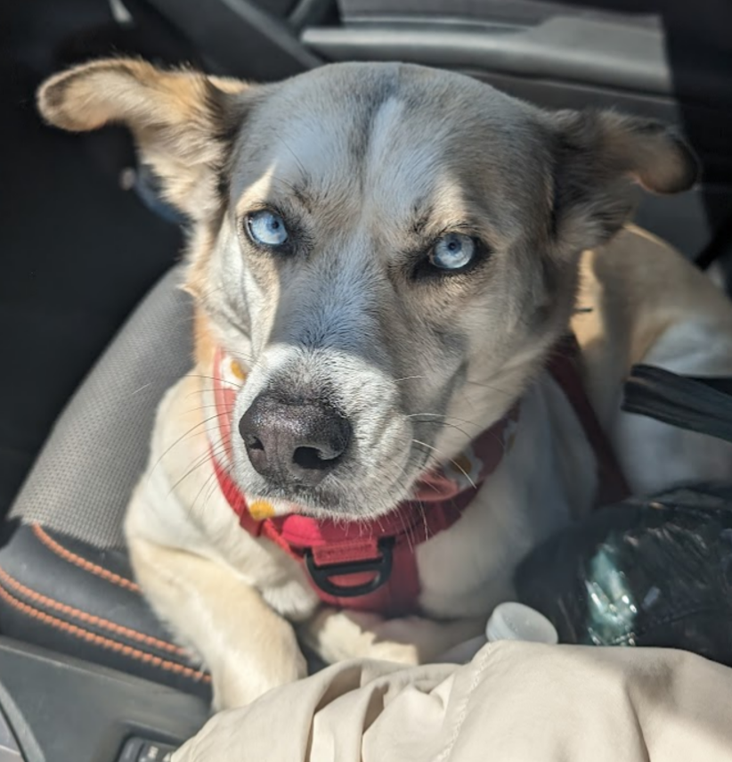
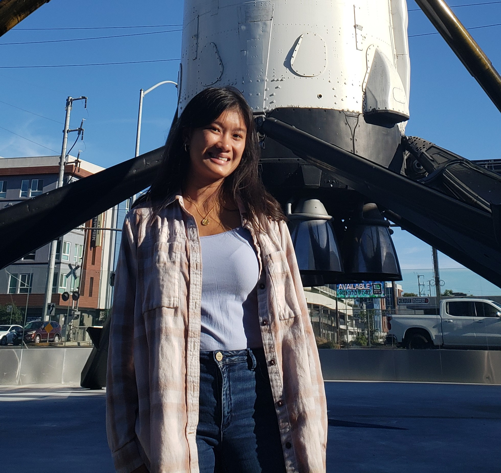
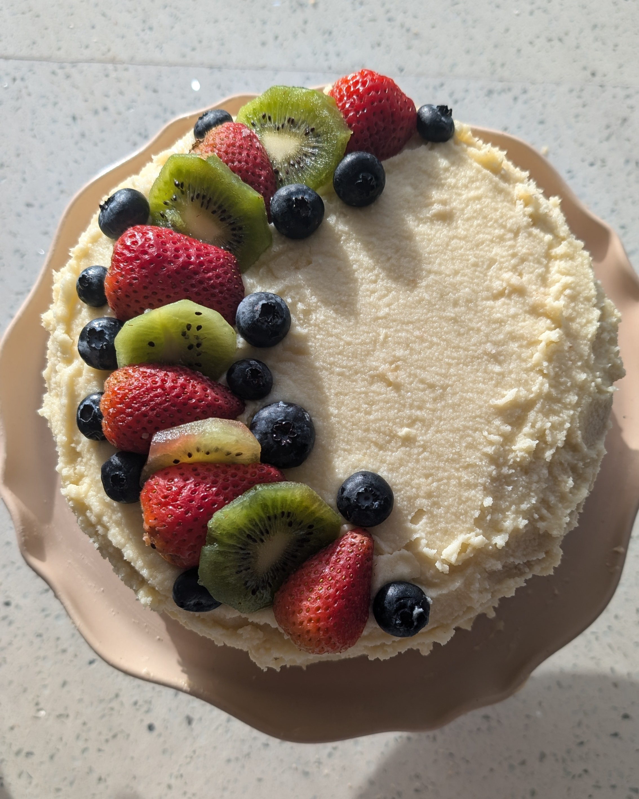
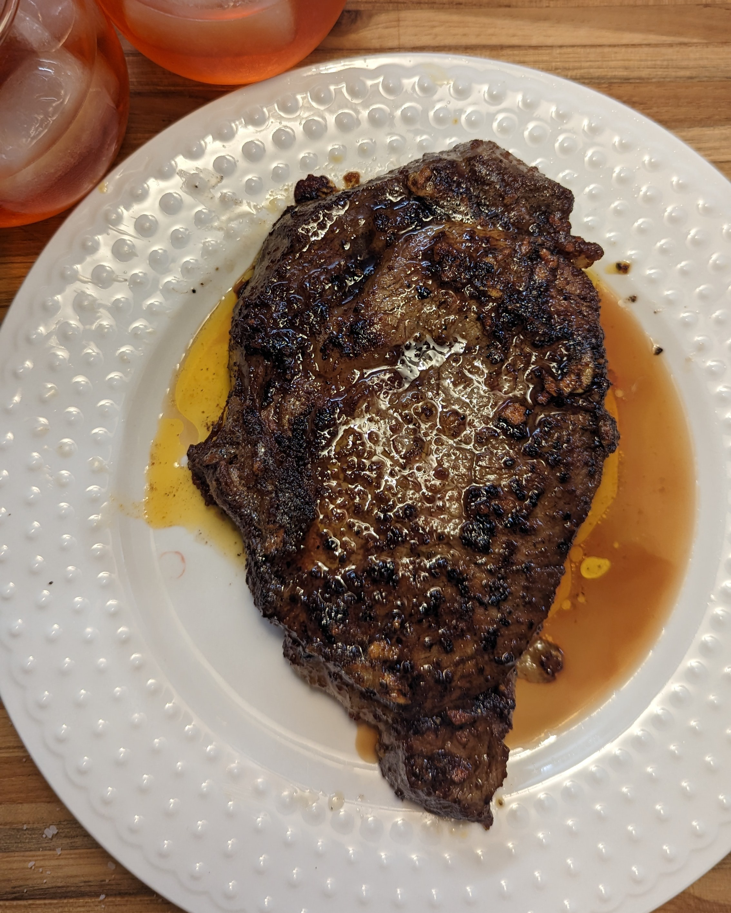
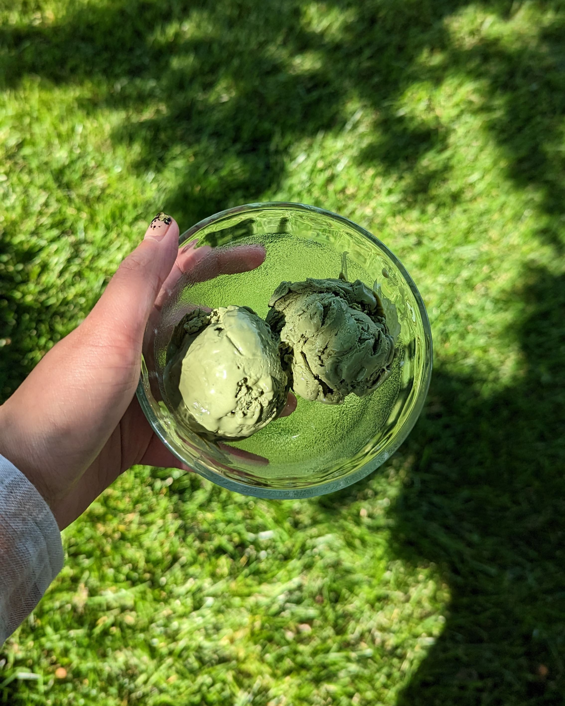
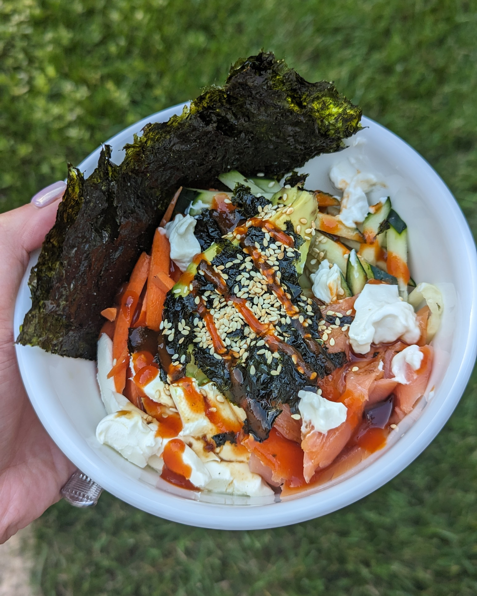
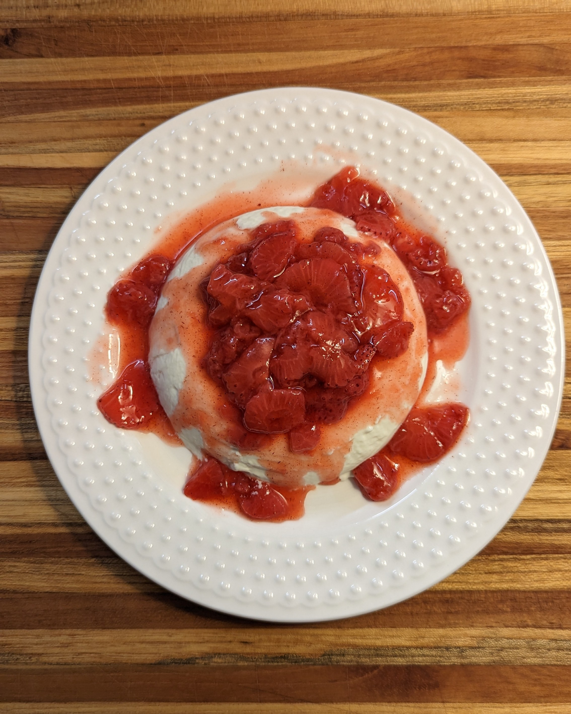
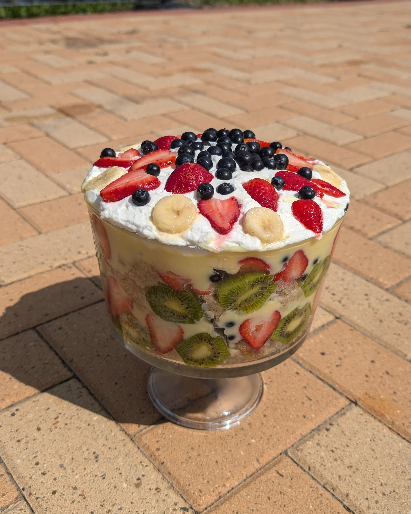
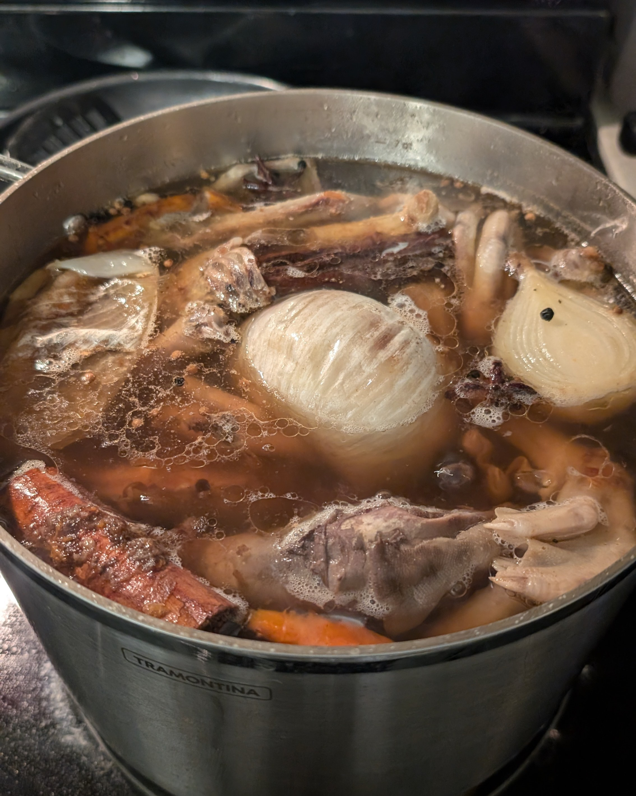
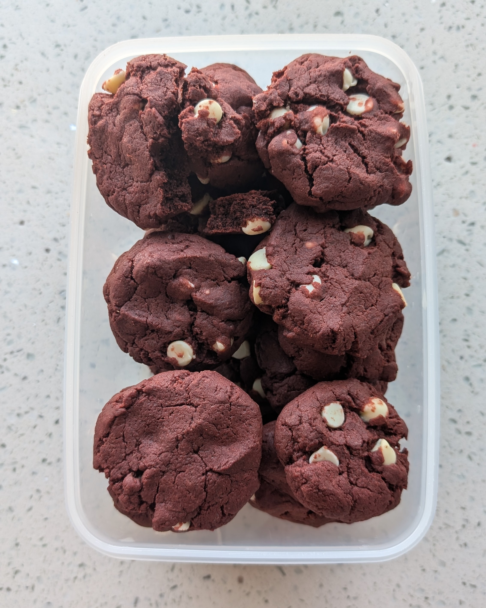

Hello.
Engineer, creator, traveller - lover of solving hard problems.
About
I'm very passionate about building the next thing that'll change the world. Some of my interests include golfing, cooking, health/wellness, and playing with my dog.


Education
Atlanta, GA
Honors Program
Experience
Starbase, TX
Feb 2025 - Present
July 2023 - Feb 2025
 Avionics test engineering, manufacturing, project management. Some projects I've worked on include
bringing up test stands (test rack, software) for DUT production and development testing, building chambers
to increase Starbase test capabilities (torch, helium bomb, vacuum), owning a HALT/HASS chamber, managing
software rollout to production floor, and managing cross-functional initiatives between multiple teams
and stakeholders. Within these roles I have knowledge in test engineering (hardware dev, software dev),
manufacturing, fluids, pressurized systems, hardware design using CAD, and managing projects and keeping to timelines.
Avionics test engineering, manufacturing, project management. Some projects I've worked on include
bringing up test stands (test rack, software) for DUT production and development testing, building chambers
to increase Starbase test capabilities (torch, helium bomb, vacuum), owning a HALT/HASS chamber, managing
software rollout to production floor, and managing cross-functional initiatives between multiple teams
and stakeholders. Within these roles I have knowledge in test engineering (hardware dev, software dev),
manufacturing, fluids, pressurized systems, hardware design using CAD, and managing projects and keeping to timelines.
July 2023 - Feb 2025
Partnered with NASA and internal stakeholders to review and implement mission requirements; modeled
docking adapter clearance zones in NX; developed a simulation server driver to fake data testing on Starship
Atlanta, GA
May 2022 – May 2023
Managed avionics, structures, and software teams to develop and launch a 1U cubesat; led integration testing (vibe, TVAC).
Coordinated with launch providers JAXA/Spaceflight to ensure launch readiness and mission
January 2021 – May 2022
Developed acceptance test procedures for PCBA modules; debugging issues during test; designed flatsat PCBA
connection 7, 52-pin cubesat panels for ease of test
Developed stress test & logging software using Python to test microcontroller for performance optimization and temperature during TVAC testing
Greenbelt, MD
Aug 2020 - Present
Supporting the Avionics and Electrical Systems branch, Code 565 with the Electrical Ground Support Equipment group
Huntsville, AL | Virtual
May 2020 - August 2020
Supported development teams with run-ahead user experience designs in a SaFE Agile environment to improve a missile simulation
Communicated with the customer, product owners, development teams, and architects to ensure designs accurately convey information architecture to the user
Solved design issues by optimizing the efficiency of the design to showcase large quantities of information to the users
El Segundo, CA
May 2019 - August 2019
Contributed to the user-interface of a cutting-edge proprietary satellite visualization engine using C++, OpenGL, and the Qt-based framework by adding features to make development and customer usage effortless
Optimized efficiency of usage for the web interface of a satellite intercept and rendezvous visualization tool by developing the web interface using Javascript, HTML, and CSS creating a smoother user experience
Atlanta, GA
April 2019 - Present
Create and design circuit schematics and developing printed circuit boards using KiCad for propulsion electronics and avionic sensors for a rocket to space
Developing a schematic for a field reader to test sensor functionality on the testing field using Altium
Developed a light, encompassing schematic for the engine controller to turn engine valves on or off for testing purposes, interfacing with a control room and teensy
January 2019 - August 2019
Developed YJSP engineering specifications; integrating and testing different projects by each team using models and simulations; returning necessary feedback
Interpreted software for a 6DOF simulation developed by a past engineer, documenting the code
Beyond Work
 Tonkatsu Ramen
Tonkatsu Ramen

Vanilla Cake

Gochujang Steak

Matcha Ice Cream

Poke

Panna Cotta

Trifle

Duck Soup

Red Velvet Cookies

Contact Me